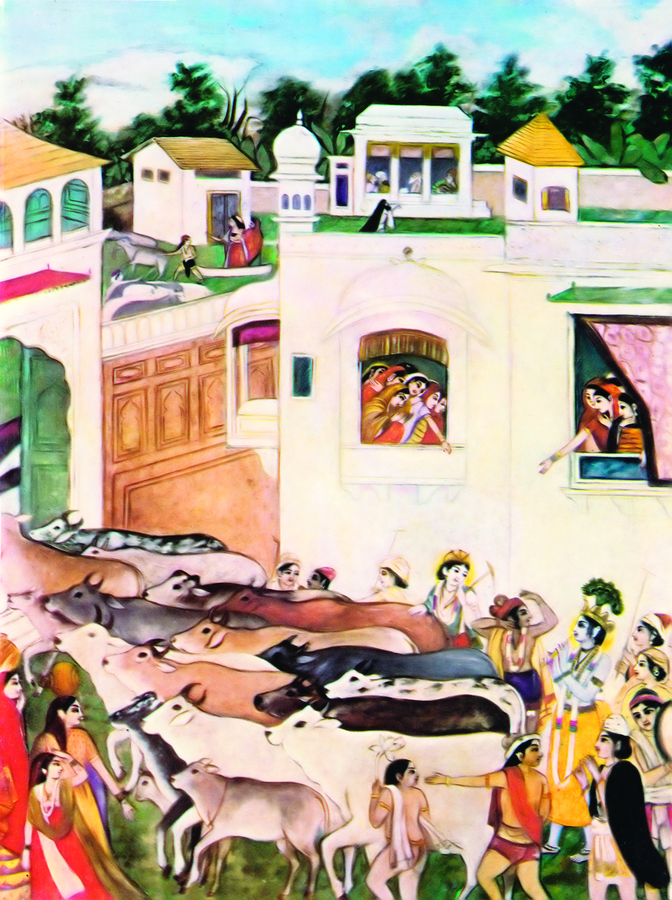

If you vibrate these transcendental sounds everywhere continually, it will pierce their ears and enter their hearts, and then their natural attraction for Krsna will be revived.
If you vibrate these transcendental sounds everywhere continually, it will pierce their ears and enter their hearts, and then their natural attraction for Krsna will be revived.Abhay Charanaravinda Bhaktivedanta Swami Prabhupada (IAST: Abhaya Caraṇāravinda Bhakti-vedānta Svāmī Prabhupāda; 1 September 1896 – 14 November 1977) was the founder of the International Society for Krishna Consciousness (ISKCON), commonly known as the "Hare Krishna movement". Followers of ISKCON view Bhaktivedanta Swami Prabhupada as a representative and messenger of Chaitanya Mahaprabhu.
Abhay Charanaravinda Bhaktivedanta Swami Prabhupada (IAST: Abhaya Caraṇāravinda Bhakti-vedānta Svāmī Prabhupāda; 1 September 1896 – 14 November 1977) was the founder of the International Society for Krishna Consciousness (ISKCON), commonly known as the "Hare Krishna movement". Followers of ISKCON view Bhaktivedanta Swami Prabhupada as a representative and messenger of Chaitanya Mahaprabhu.
Abhay Charanaravinda Bhaktivedanta Swami Prabhupada (IAST: Abhaya Caraṇāravinda Bhakti-vedānta Svāmī Prabhupāda; 1 September 1896 – 14 November 1977) was the founder of the International Society for Krishna Consciousness (ISKCON), commonly known as the "Hare Krishna movement". Followers of ISKCON view Bhaktivedanta Swami Prabhupada as a representative and messenger of Chaitanya Mahaprabhu.
If you vibrate these transcendental sounds everywhere continually, it will pierce their ears and enter their hearts, and then their natural attraction for Krsna will be revived.
Neither the hosts of demigods nor the great sages know My origin, for, in every respect, I am the source of the demigods and the sages.
If you vibrate these transcendental sounds everywhere continually, it will pierce their ears and enter their hearts, and then their natural attraction for Krsna will be revived.
There Kṛṣṇa is very fond of cows. There is Kṛṣṇa's another name is Gopāla. Gopāla means who tends cows. Go means cow and pāla means one who tends. Therefore Kṛṣṇa's another name is Gopāla.
 Fools deride Me when I descend in the human form. They do not know My transcendental nature and My supreme dominion over all that be.
Fools deride Me when I descend in the human form. They do not know My transcendental nature and My supreme dominion over all that be.
Bhagavad-gita 3.10